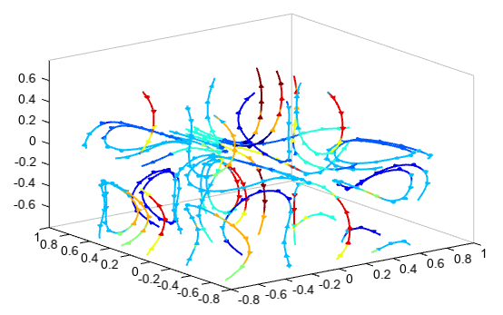
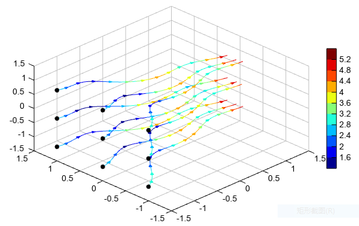

streamplot3¶
- Axes3DGL.streamplot(*args, **kwargs):
Plot stream lines in 3D axes.
- Parameters
x – (array_like) X coordinate array.
y – (array_like) Y coordinate array.
z – (array_like) Z coordinate array.
u – (array_like) U component of the arrow vectors (wind field).
v – (array_like) V component of the arrow vectors (wind field).
w – (array_like) W component of the arrow vectors (wind field).
density – (int) Streamline density. Default is 4.
- Returns
Streamlines
Example of 3D streamline plot
# Make the grid x, y, z = meshgrid(arange(-0.8, 1, 0.2), arange(-0.8, 1, 0.2), arange(-0.8, 1, 0.2)) # Make the direction data for the arrows u = sin(pi * x) * cos(pi * y) * cos(pi * z) v = -cos(pi * x) * sin(pi * y) * cos(pi * z) w = (sqrt(2.0 / 3.0) * cos(pi * x) * cos(pi * y) * sin(pi * z)) w = w * 3 speed = sqrt(u*u + v*v + w*w) axes3d() grid(False) streamplot3(x[0,0,:], y[0,:,0], z[:,0,0], u, v, w, speed, linewidth=2, density=4) xlim(-0.8, 1) ylim(-0.8, 1) antialias()
3D streamline plot with start positions
# Make the grid x, y, z = meshgrid(arange(-1.5, 1.5, 0.1), arange(-1.5, 1.5, 0.1), arange(-1.5, 1.5, 0.1)) # Make the direction data for the arrows u = x + cos(4*x) + 3 # x-component of vector field v = sin(4*x) - sin(2*y) # y-component of vector field w = -z # z-component of vector field speed = sqrt(u*u + v*v + w*w) sx, sy, sz = meshgrid([-1.5], [-1,0,1], [-1,0,1]) qq = streamplot3(x, y, z, u, v, w, speed, linewidth=2, density=4, interval=10, start_x=sx, start_y=sy, start_z=sz) scatter3(sx, sy, sz, c='k') colorbar(qq) xlim(-1.5, 1.5) ylim(-1.5, 1.5) zlim(-1.5, 1.5) antialias(True)
3D streamline plot with pipe line
# Make the grid x, y, z = meshgrid(arange(-1.5, 1.5, 0.1), arange(-1.5, 1.5, 0.1), arange(-1.5, 1.5, 0.1)) # Make the direction data for the arrows u = x + cos(4*x) + 3 # x-component of vector field v = sin(4*x) - sin(2*y) # y-component of vector field w = -z # z-component of vector field speed = sqrt(u*u + v*v + w*w) sx, sy, sz = meshgrid([-1.5], [-1,0,1], [-1,0,1]) lighting() qq = streamplot3(x, y, z, u, v, w, speed, linewidth=2, headwidth=2, density=4, interval=20, start_x=sx, start_y=sy, start_z=sz, pipe=True, radius=0.02) scatter3(sx, sy, sz, c='k') colorbar(qq) xlim(-1.5, 1.5) ylim(-1.5, 1.5) zlim(-1.5, 1.5) antialias(True)